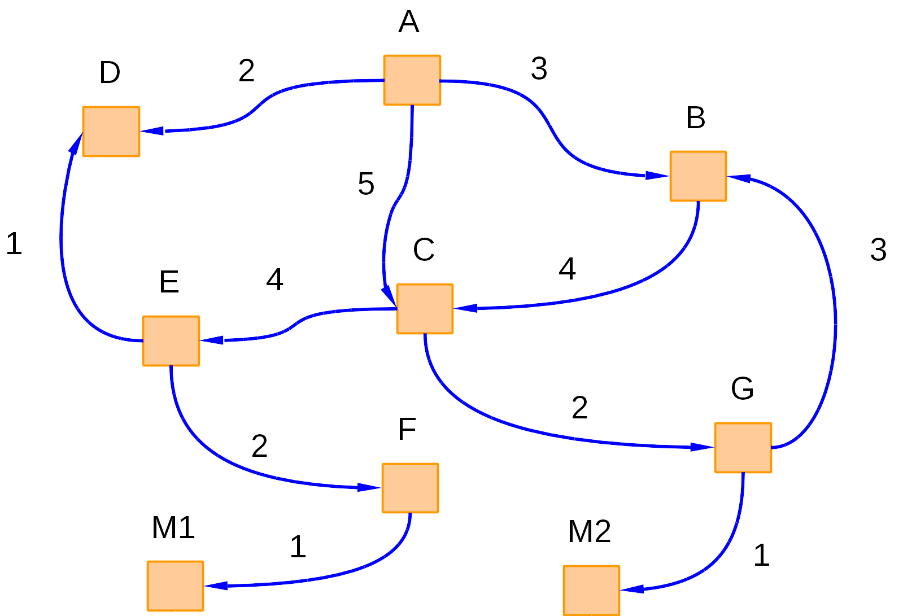

Dado el siguiente grafo dirigido donde los nodos meta están marcados como "M1" y "M2", realice las siguientes actividades:

- Aplicar los algoritmos de búsqueda por amplitud, coste uniforme y profundidad y realizar el siguiente análisis:
- Desarrollar el árbol de búsqueda para cada algoritmo.
- Comparar las rutas que encontró cada algoritmo.
- Determinar cuál fue el algoritmo que encontró la ruta con el menor coste (aplicar a búsqueda por costo uniforme vs búsqueda por profundidad).